mgcViz: visual tools for GAMs
Matteo Fasiolo and Raphael Nedellec
2018-05-29
Source:vignettes/mgcviz.rmd
mgcviz.rmdThe mgcViz R package offers visual tools for Generalized Additive Models (GAMs). The visualizations provided by mgcViz differs from those implemented in mgcv, in that most of the plots are based on ggplot2’s powerful layering system. This has been implemented by wrapping several ggplot2 layers and integrating them with computations specific to GAM models. Further, mgcViz uses binning and/or sub-sampling to produce plots that can scale to large datasets (\(n \approx 10^7\)), and offers a variety of new methods for visual model checking/selection.
This document introduces the following categories of visualizations:
smooth and parametric effect plots: layered plots based on
ggplot2and interactive 3d visualizations based on thergllibrary;model checks: interactive QQ-plots, traditional residuals plots and layered residuals checks along one or two covariates;
special plots: differences-between-smooths plots in 1 or 2D and plotting slices of multidimensional smooth effects.
1 Layered smooth effect plots
Here we describe effect-specific plotting methods and then we move to the plot.gamViz function, which wraps several effect plots together.
1.1 Effect-specific plots
Let’s start with a simple example with two smooth effects:
library(mgcViz)
n <- 1e3
dat <- data.frame("x1" = rnorm(n), "x2" = rnorm(n), "x3" = rnorm(n))
dat$y <- with(dat, sin(x1) + 0.5*x2^2 + 0.2*x3 + pmax(x2, 0.2) * rnorm(n))
b <- gam(y ~ s(x1) + s(x2) + x3, data = dat, method = "REML")Now we convert the fitted object to the gamViz class. Doing this allows us to use the tools offered by mgcViz and to save quite a lot of time when producing multiple plots using the same fitted GAM model.
b <- getViz(b)We extract the first smooth component using the sm function and we plot it. The resulting o object contains, among other things, a ggplot object. This allows us to add several visual layers.
o <- plot( sm(b, 1) )
o + l_fitLine(colour = "red") + l_rug(mapping = aes(x=x, y=y), alpha = 0.8) +
l_ciLine(mul = 5, colour = "blue", linetype = 2) +
l_points(shape = 19, size = 1, alpha = 0.1) + theme_classic()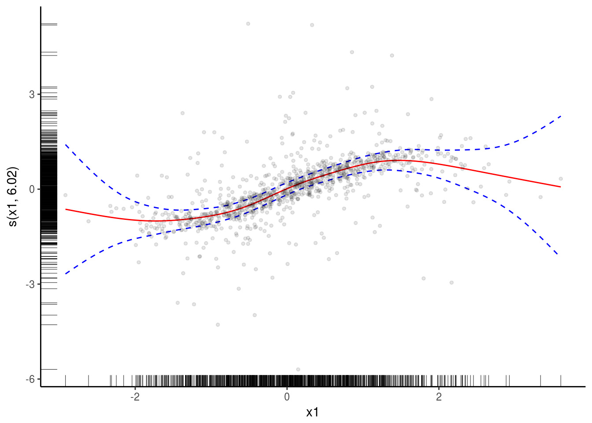
We added the fitted smooth effect, rugs on the x and y axes, confidence lines at 5 standard deviations, partial residual points and we changed the plotting theme to ggplot2::theme_classic. Functions such as l_fitLine or l_rug are effect-specific layers. To see all the layers available for each effect plot we do:
listLayers(o)## [1] "l_ciLine" "l_ciPoly" "l_fitLine" "l_dens" "l_points" "l_rug"Similar methods exist for 2D smooth effect plots, for instance if we fit:
b <- gam(y ~ s(x1, x2) + x3, data = dat, method = "REML")
b <- getViz(b)we can do
plot(sm(b, 1)) + l_fitRaster() + l_fitContour() + l_points()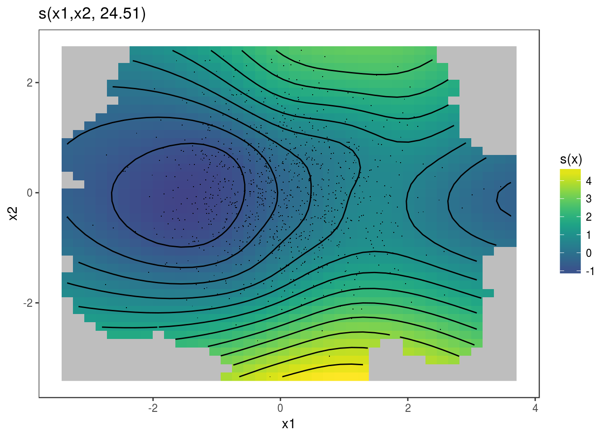
This can be converted to an interactive plotly plot as follows:
# Cannot run this when building the pdf for this vignette, but do try it!
library(plotly)
ggplotly( plot(sm(b, 1)) + l_fitRaster() + l_points() + l_fitContour() )We can extract the parametric effect x3 using the pterm function (which is the parametric equivalent of sm). We can then plot the two effects on a grid using the gridPrint function:
gridPrint(plot(sm(b, 1)) + l_fitRaster() + l_fitContour() + labs(title = NULL) + guides(fill=FALSE),
plot(pterm(b, 1)) + l_ciPoly() + l_fitLine(), ncol = 2)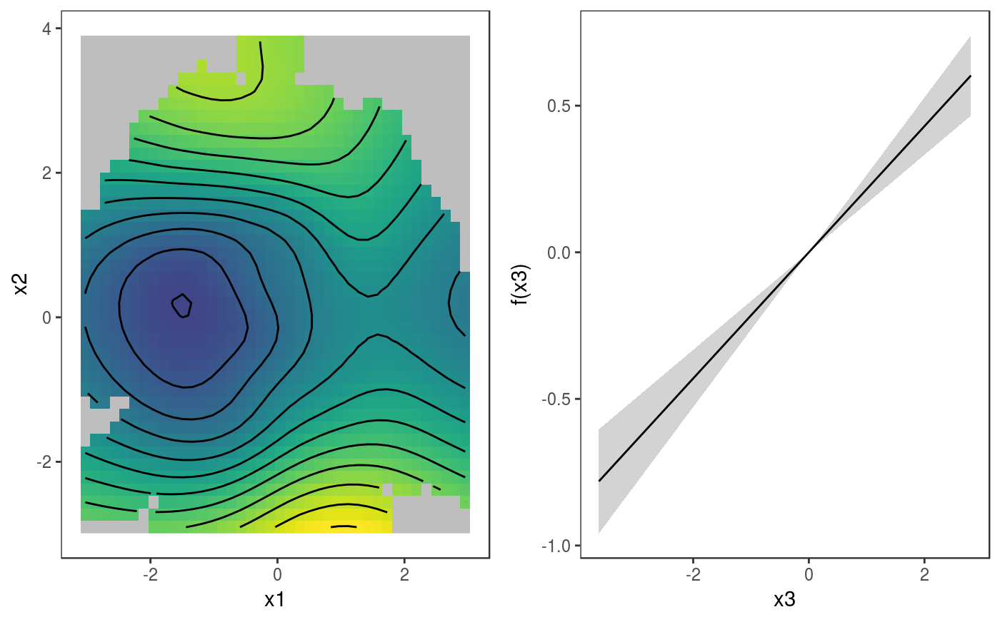
If needed, we can convert a gamViz object back to its original form by doing:
b <- getGam(b)
class(b)## [1] "gam" "glm" "lm"The only reason to do so might be to save some memory (gamViz objects store some extra objects).
1.2 The plot.gamViz method
The plot.gamViz is the mgcViz’s equivalent of mgcv::plot.gam. This function wraps together the plotting methods related to each specific smooth or parametric effect, which can save time when doing GAM modelling. Consider this model:
dat <- gamSim(1,n=1e3,dist="normal",scale=2)
dat$fac <- as.factor( sample(letters[1:6], nrow(dat), replace = TRUE) )
b <- gam(y~s(x0)+s(x1, x2)+s(x3)+fac, data=dat)To plot all the effects we do:
b <- getViz(b)
print(plot(b, allTerms = T), pages = 1) # Calls print.plotGam()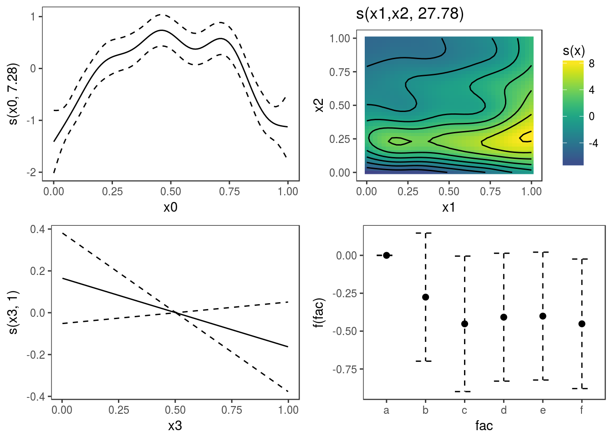
Here plot calls plot.gamViz, and setting allTerms = TRUE makes so that also the parametric terms are plotted. We are calling print (which uses the print.plotGam method) explicitly, because we want to put all plots on one page. Alternatively we could have simply done:
plot(b)which plots only the smooth effects, diplaying one on each page.
Notice that plot.gamViz returns an object of class plotGam, which is initially empty. The layers in the previous plots (e.g. the rug and the confidence interval lines) have been added by print.plotGam, which adds some default layers to empty plotGam objects. This can be avoided by setting addLay = FALSE in the call to print.plotGam. A plotGam object in considered not empty if we added objects of class gamLayer to it, for instance:
pl <- plot(b, allTerms = T) + l_points() + l_fitLine(linetype = 3) + l_fitContour() +
l_ciLine(colour = 2) + l_ciBar() + l_fitPoints(size = 1, col = 2) + theme_get() + labs(title = NULL)
pl$empty # FALSE: because we added gamLayers## [1] FALSEprint(pl, pages = 1)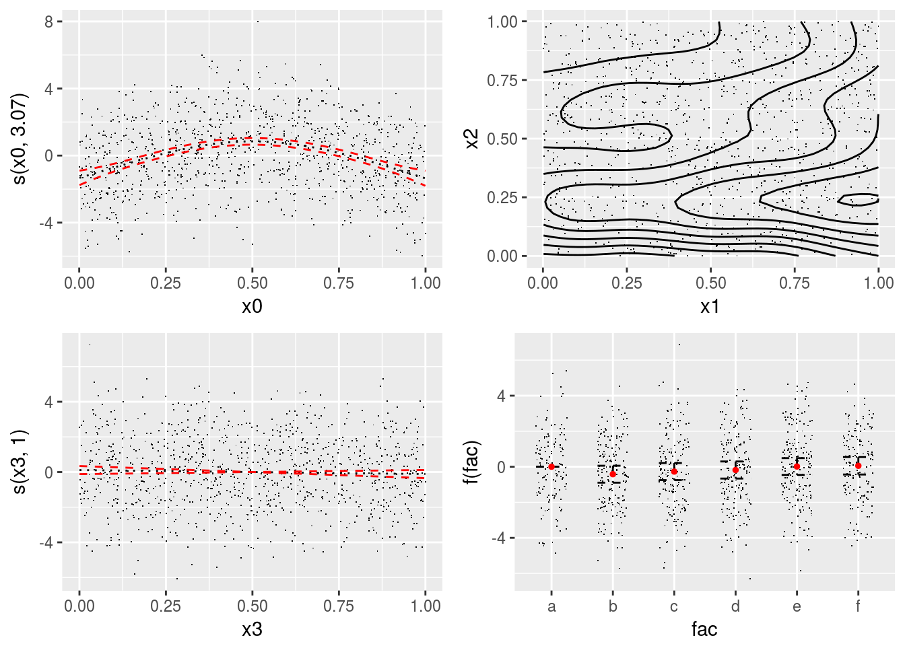
Here all the functions starting with l_ return gamLayer objects. Notice that some layers are not relevant to all smooths. For instance, l_fitContour is added only to the second smooth. The +.plotGam method automatically adds each layer only to compatible effect plots.
We can plot individuals effects by using the select arguments. For instance:
plot(b, select = 1)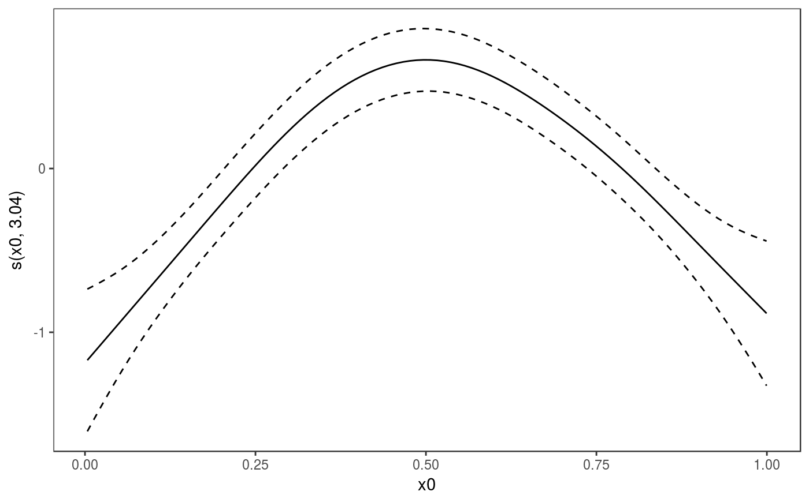 where only the default layers are added. Obviously we can have our custom layers instead:
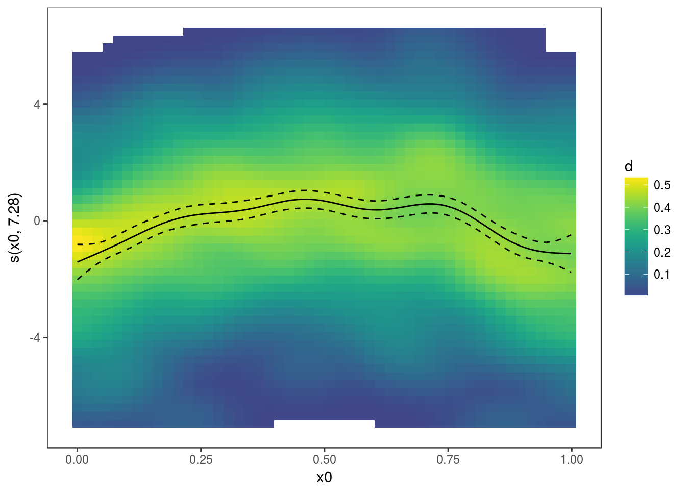 where the l_dens layer represents the conditional density of the partial residuals. Parametric effects always come after smooth or random effects, hence to plot the factor effect we do:
plot(b, allTerms = TRUE, select = 4) + geom_hline(yintercept = 0)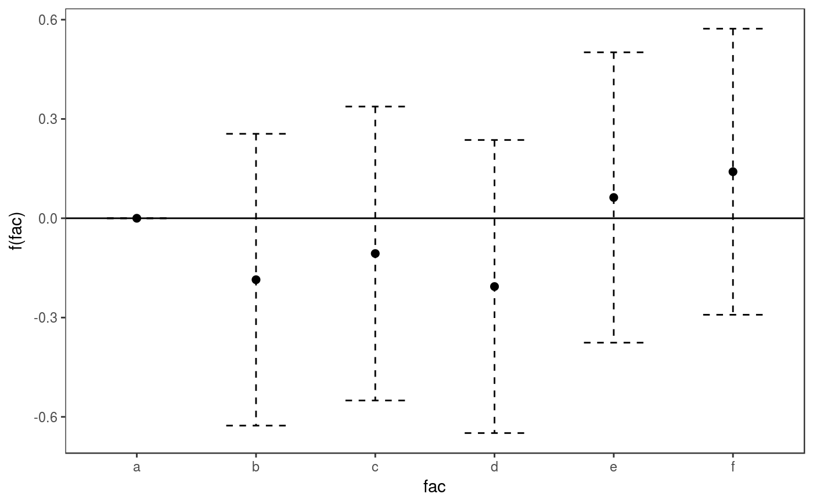
1.3 Interactive rgl smooth effect plots
mgcViz provides tools for generating interactive plots of multidimensional smooths via the rgl R package. Here is an example where we are plotting a 2D slice of a 3D smooth effect, with confidence surfaces:
library(mgcViz)
n <- 500
x <- rnorm(n); y <- rnorm(n); z <- rnorm(n)
ob <- (x-z)^2 + (y-z)^2 + rnorm(n)
b <- gam(ob ~ s(x, y, z))
b <- getViz(b)
# This will not appear in the .pdf or .html document, but do try it!
plotRGL(sm(b, 1), fix = c("z" = 0), residuals = TRUE)The fix argument is used to determine where the 3D effect should be sliced along the z-axis. The plot also shows a subset of residuals (colour-coded depending on sign) that fall close (in term of Euclidean distance) to the selected slice. Notice that plotRGL is not layered at the moment, and most options need to be specified in the initial function call. However, the interactive plot can still be manipulated once the rgl window is open. For instance here we change the aspect ratio:
aspect3d(1, 2, 1)We then close the window using:
rgl.close()2 Model checking
2.1 New version of traditional model checks
Most of the model checks provided by mgcv are contained in qq.gam and gam.check. mgcViz substitutes them with the more advanced qq.gamViz and check.gamViz methods.
2.1.1 The qq.gamViz method
Consider the following model with binomial responses:
set.seed(0)
n.samp <- 400
dat <- gamSim(1,n = n.samp, dist = "binary", scale = .33)
p <- binomial()$linkinv(dat$f) ## binomial p
n <- sample(c(1, 3), n.samp, replace = TRUE) ## binomial n
dat$y <- rbinom(n, n, p)
dat$n <- n
lr.fit <- gam(y/n ~ s(x0) + s(x1) + s(x2) + s(x3),
family = binomial, data = dat,
weights = n, method = "REML")
lr.fit <- getViz(lr.fit)We can get a QQ-plot of the residuals as follows:
qq(lr.fit, method = "simul1", a.qqpoi = list("shape" = 1), a.ablin = list("linetype" = 2))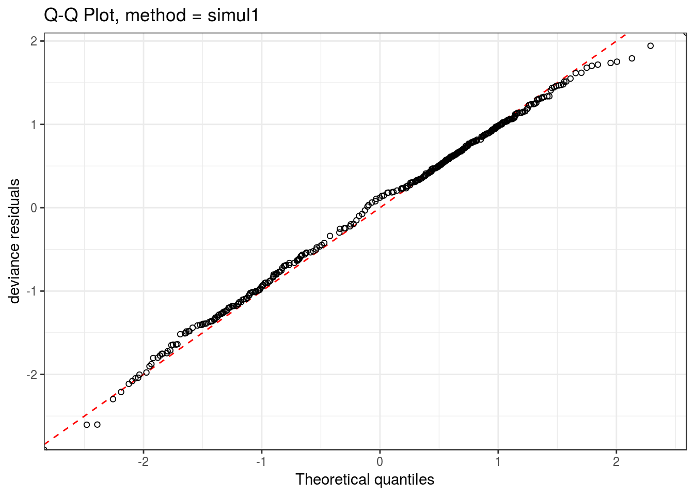 Here method determines the method used to compute the QQ-plot, while the arguments starting with a. are lists that will be passed directly to the corresponding ggplot2 layer (geom_point and geom_abline here). We can remove the confidence intervals and show all simulated (model-based) QQ-curves as follows:
qq(lr.fit, rep = 20, show.reps = T, CI = "none", a.qqpoi = list("shape" = 19), a.replin = list("alpha" = 0.2))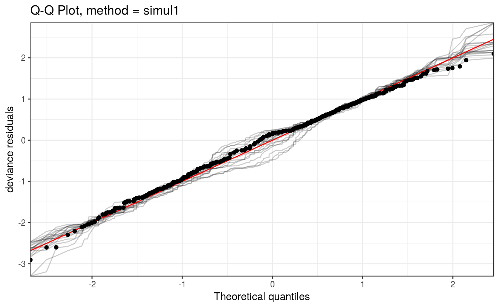
Importantly, mgcViz::qq.gam can handle large datasets by discretizing the QQ-plot before plotting. For instance, let’s increase n.samp in the previous example:
set.seed(0)
n.samp <- 50000
dat <- gamSim(1,n=n.samp,dist="binary",scale=.33)
p <- binomial()$linkinv(dat$f) ## binomial p
n <- sample(c(1,3),n.samp,replace=TRUE) ## binomial n
dat$y <- rbinom(n,n,p)
dat$n <- n
lr.fit <- bam(y/n ~ s(x0) + s(x1) + s(x2) + s(x3)
, family = binomial, data = dat,
weights = n, method = "fREML", discrete = TRUE)
lr.fit <- getViz(lr.fit)Here the discrete argument determines whether the QQ-plot is discretized or not. Notice that we can compute the QQ-plot, store it in o and then plot it (via print.qqGam).
o <- qq(lr.fit, rep = 10, method = "simul1", CI = "normal", show.reps = TRUE,
a.replin = list(alpha = 0.1), discrete = TRUE)
o 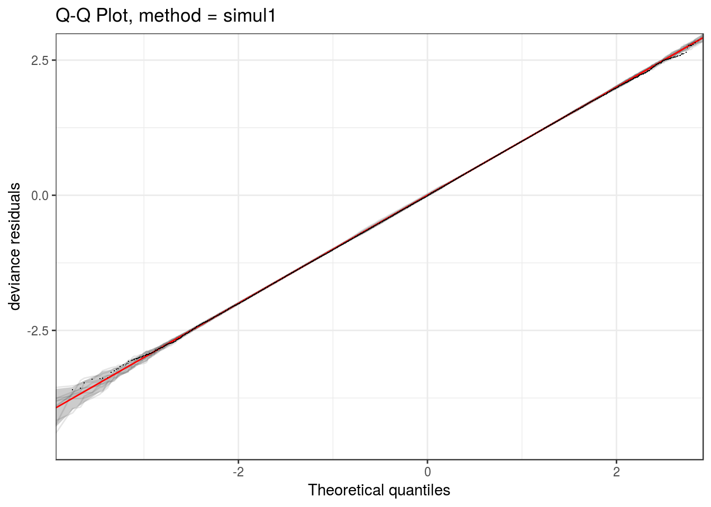
The coarseness of the discretization grid is determined by the ngr argument:
o <- qq(lr.fit, rep = 10, method = "simul1", CI = "normal", show.reps = TRUE,
ngr = 1e2, a.replin = list(alpha = 0.1), a.qqpoi = list(shape = 19))
o 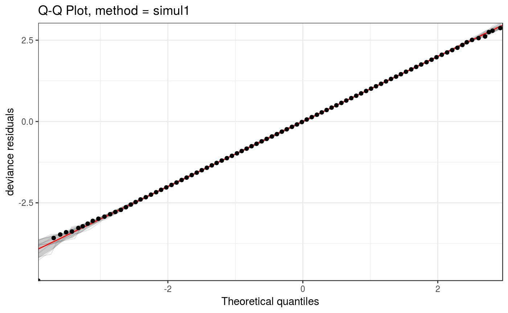
We can zoom into particular areas of the plot using the zoom generic. Also, given that qq.gamViz and zoom.qqGam output objects of class plotSmooth, we can arrange them using the gridPrint:
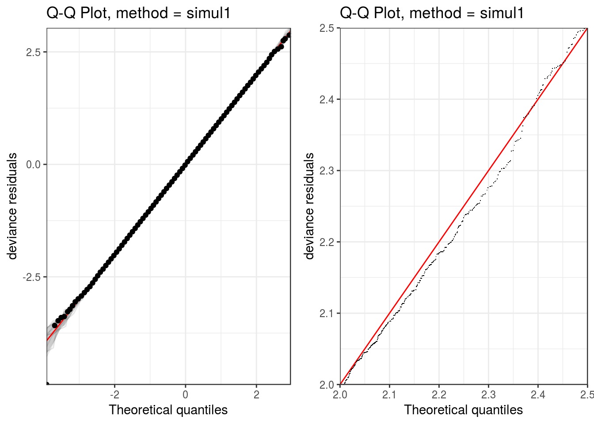
The QQ-plot can also be manipulated interactively using the shine generic, which transforms it into a shiny app:
# Cannot run this when building the pdf for this vignette, but do try it!
shine(o)
2.1.2 The check.gamViz method
The check.gamViz method is similar to mgcv::gam.check, with the difference that it produces a sequence of ggplot objects and that it sub-samples the residuals to avoid over-plotting (or stalling entirely) when dealing with large data sets. Here is an example:
set.seed(0)
dat <- gamSim(1, n = 200)## Gu & Wahba 4 term additive modelb <- gam(y ~ s(x0) + s(x1) + s(x2) + s(x3), data = dat)
b <- getViz(b)
check(b,
a.qq = list(method = "tnorm",
a.cipoly = list(fill = "light blue")),
a.respoi = list(size = 0.5),
a.hist = list(bins = 10))##
## Method: GCV Optimizer: magic
## Smoothing parameter selection converged after 8 iterations.
## The RMS GCV score gradient at convergence was 1.072609e-05 .
## The Hessian was positive definite.
## Model rank = 37 / 37
##
## Basis dimension (k) checking results. Low p-value (k-index<1) may
## indicate that k is too low, especially if edf is close to k'.
##
## k' edf k-index p-value
## s(x0) 9.00 2.32 1.00 0.45
## s(x1) 9.00 2.31 0.97 0.34
## s(x2) 9.00 7.65 0.96 0.26
## s(x3) 9.00 1.23 1.04 0.69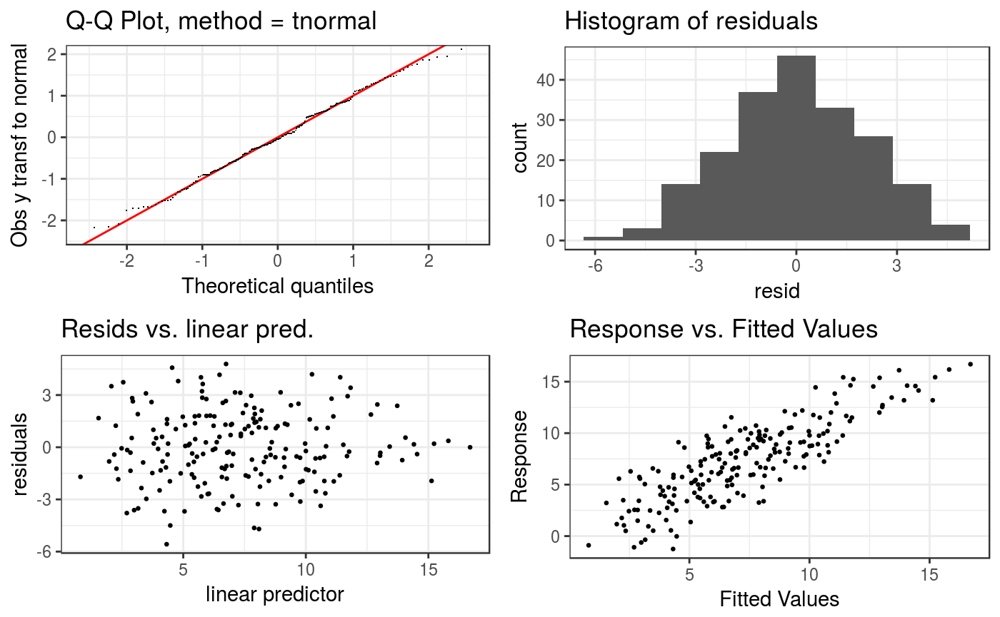
The a.qq argument is a list that gets passed directly to qq.gamViz. Similarly, a.repoi is passed to ggplot2::geom_points and a.hist to ggplot2::geom_hist.
2.2 New layered model checks
The qq.gamViz and check.gamViz functions are not layered, and in fact require using lists of arguments to be passed to the underlying ggplot2 layers. Instead the methods described in this section are fully layered, hence easy to extend and customize.
2.2.1 One dimensional checks using check1D
This function allows to verify how the residuals vary along one covariate. Consider the following model:
set.seed(4124)
n <- 1e4
x <- rnorm(n); y <- rnorm(n);
z <- as.factor( sample(letters[1:6], n, replace = TRUE) )
ob <- (x)^2 + (y)^2 + (0.2*abs(x) + 1) * rnorm(n)
b <- bam(ob ~ s(x,k=30) + s(y, k=30) + z, discrete = TRUE)
b <- getViz(b)Here the responses variance varies a lot along \(x\). Assume that we didn’t know this, but that we wanted to find out whether the residuals are heteroscedastic. We can start by doing the following:
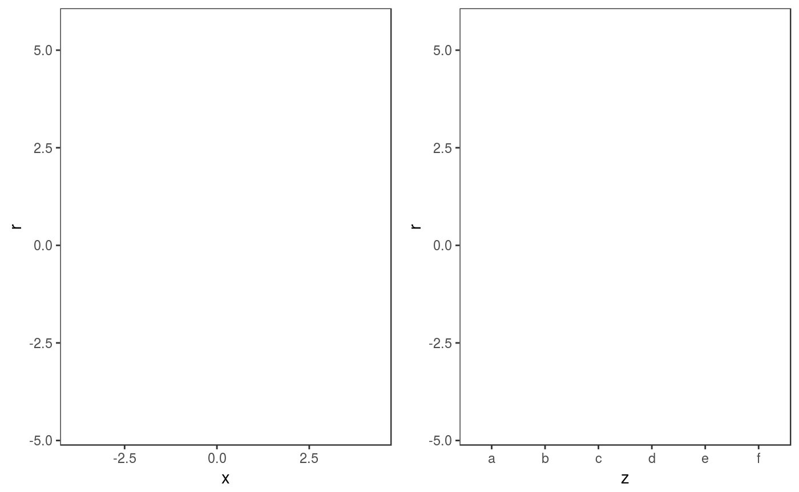
This produces two view along \(x\) and \(z\), but as you can see the plots are initially empty. We might want to add a layer showing the conditional distribution of the residuals along \(x\) and \(z\) and another containing a rug:
gridPrint(ck1 + l_dens(type = "cond", alpha = 0.8) + l_rug(alpha = 0.2),
ck2 + l_points() + l_rug(alpha = 0.2), layout_matrix = matrix(c(1, 1, 2), 1, 3))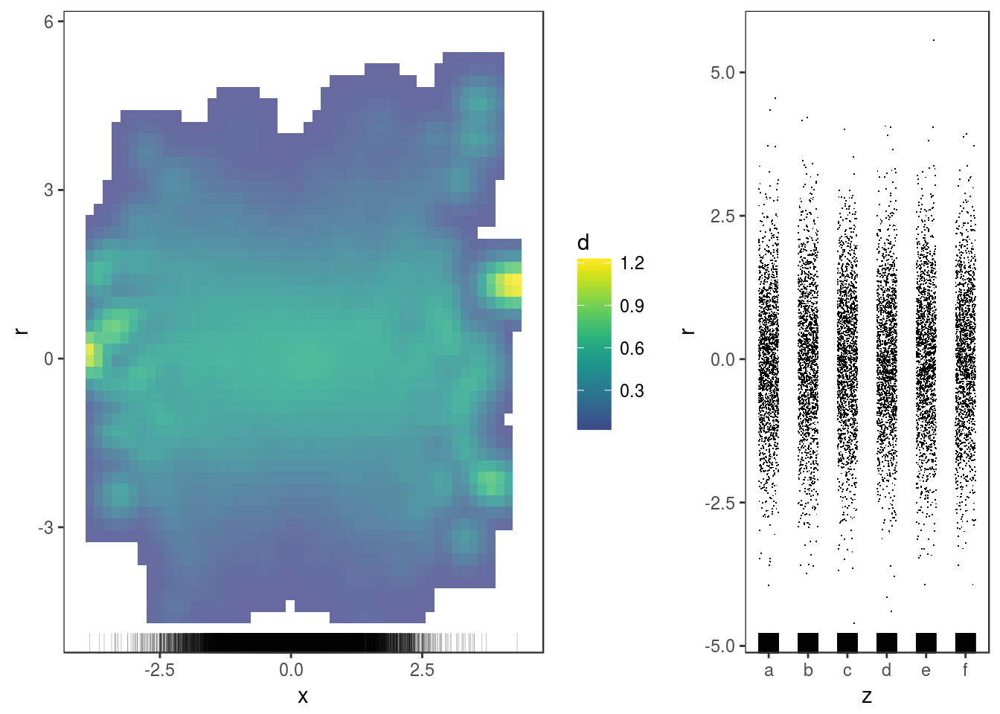
The left plot suggests that the variance of the residuals might be lower in the middle (\(x=0\)), but it is not entirely clear. The l_densCheck layer gives a more clear answer in this case:
ck1 + l_densCheck()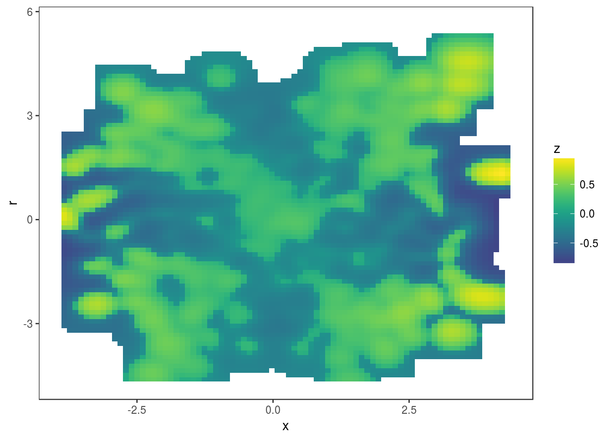 This layers adds an heatmap proportional to \(\{p(r|x)^{1/2} - p_m(r|x)^{1/2}\}^{1/3}\), where \(r\) are the residuals, while \(p\) and \(p_m\) are their empirical and theoretical (model based) densities. In particular, \(p\) is estimated using the the fast k.d.e. method of Wand (1994) (implemented by the kernSmooth package) and \(p_m\) is a standard normal density here. This plot makes clear that the residuals are over-dispersed when \(x\) is far from zero.
The l_gridCheck1D provides another way of finding residuals patterns. For instance:
b <- getViz(b, nsim = 50)
gridPrint(check1D(b, "x") + l_gridCheck1D(gridFun = sd, show.reps = TRUE),
check1D(b, "z") + l_gridCheck1D(gridFun = sd, show.reps = TRUE), ncol = 2)
Here we converted b again using getViz with nsim = 50. This is because l_gridCheck1D needs some simulations to compute the confidence intervals. The simulations are done by getViz and then stored inside b. l_gridCheck1D simply bins the residuals according to their \(x\) values, and evaluates a user-defined function (sd here) over the observed and simulated residuals.
2.2.2 Two dimensional checks using check2D
check2D is quite similar to check1D, but looks at the residuals along two covariates. Here is an example where the mean effect follows the Rosenbrock function:
set.seed(566)
n <- 1e4
X <- data.frame("x1"=rnorm(n, 0.5, 0.5), "x2"=rnorm(n, 1.5, 1),
"fac"=as.factor( sample(letters[1:6], n, replace = TRUE) ))
X$y <- (1-X$x1)^2 + 100*(X$x2 - X$x1^2)^2 + rnorm(n, 0, 2)
b <- bam(y ~ te(x1, x2, k = 5), data = X, discrete = TRUE)
b <- getViz(b, nsim = 50)We start by generating two 2D views:
Then we add the l_gridCheck2D layer:
ck1 + l_gridCheck2D(gridFun = mean)
ck2 + l_gridCheck2D(gridFun = mean)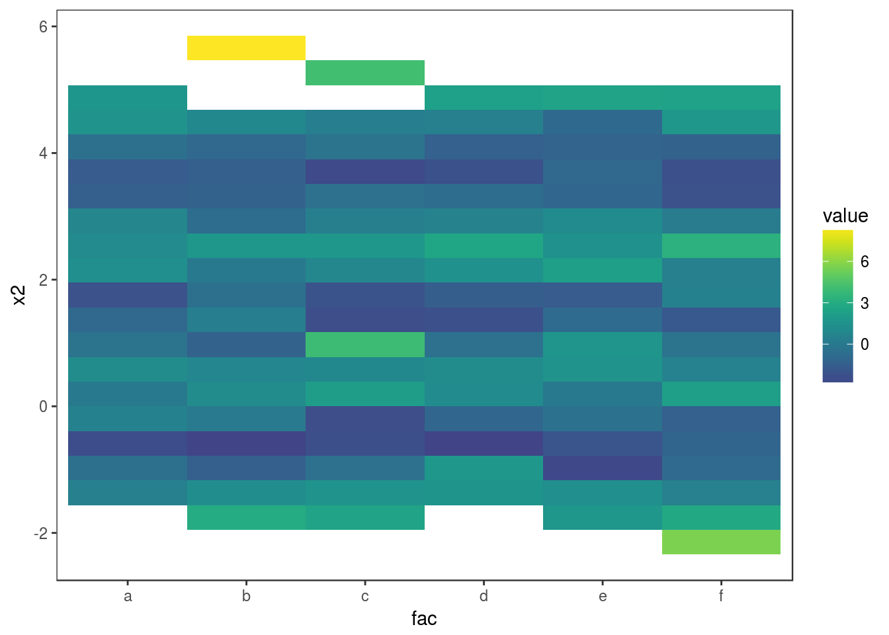
l_gridCheck2D bins the observed and simulated residuals, summarizes them using a scalar-valued function (mean here), and adds a heatmap of the observed summary in each cell, normalized using the nsim summaries obtained using the simulations. In the first plot above, the pattern in the residual means is not very well visible, due to outliers on the far right. The pattern is made more visible by zooming on the center of the distribution and by changing the size of the bins:
ck1 + l_gridCheck2D(bw = c(0.05, 0.1)) + xlim(-1, 1) + ylim(0, 3)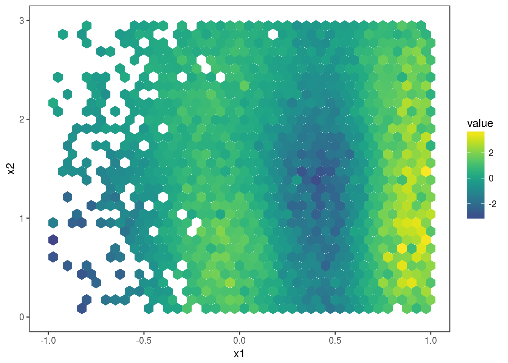
As for smooth effect plots, we can list the available layers by doing:
listLayers( ck1 ) ## [1] "l_gridCheck2D" "l_dens" "l_glyphs2D" "l_points"
## [5] "l_rug"The most sophisticated layer is probably l_glyphs2D which we illustrate here using an heteroscedastic model:
set.seed(4124)
n <- 1e4
dat <- data.frame("x1" = rnorm(n), "x2" = rnorm(n))
dat$y <- (dat$x1)^2 + (dat$x2)^2 + (1*abs(dat$x1) + 1) * rnorm(n)
b <- bam(y ~ s(x1,k=30) + s(x2, k=30), data = dat, discrete = TRUE)
b <- getViz(b)
ck <- check2D(b, x1 = "x1", x2 = "x2", type = "tnormal")Similarly to l_gridCheck2D, l_glyphs2D bins the residuals according to two covariates, but the user-defined function used to summarize the residuals in each bin has to return a data.frame, rather than a scalar. Here is an example:
glyFun <- function(.d){
.r <- .d$z
.qq <- as.data.frame( density(.r)[c("x", "y")], n = 100 )
.qq$colour <- rep(ifelse(length(.r)>50, "black", "red"), nrow(.qq))
return( .qq )
}
ck + l_glyphs2D(glyFun = glyFun, ggLay = "geom_path", n = c(8, 8),
mapping = aes(x=gx, y=gy, group = gid, colour = I(colour)),
height=1.5, width = 1)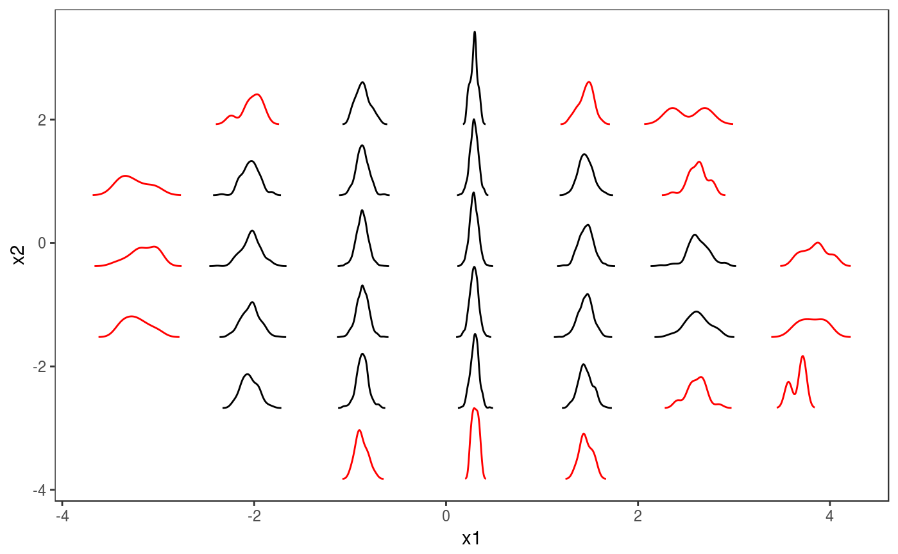
Each glyph represend a kernel density of the residuals, with colours indicating whether we have more (black) or less (red) that 50 observations in that bin. It is clear that the residuals are much less variable for \(x \approx 0\) than elsewhere. We can do the same using binned worm-plots:
glyFun <- function(.d){
n <- nrow(.d)
px <- qnorm( (1:n - 0.5)/(n) )
py <- sort( .d$z )
clr <- if(n > 50) { "black" } else { "red" }
clr <- rep(clr, n)
return( data.frame("x" = px, "y" = py - px, "colour" = clr))
}
ck + l_glyphs2D(glyFun = glyFun, ggLay = "geom_point", n = c(10, 10),
mapping = aes(x=gx, y=gy, group = gid, colour = I(colour)),
height=2, width = 1, size = 0.2) 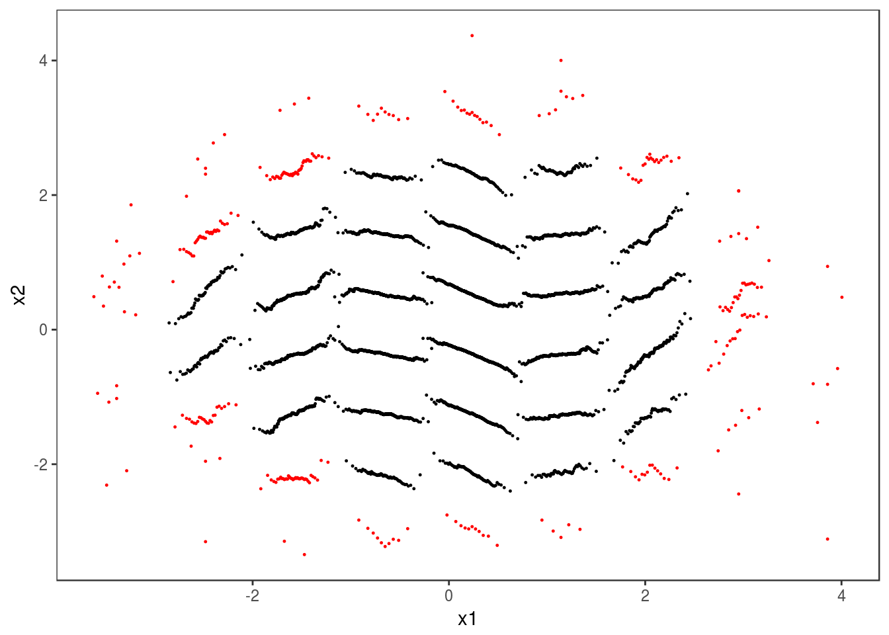
Notice that worm-plots (Buuren and Fredriks, 2001) are simply rotated QQ-plots. An horizontal plot indicates well specified residual model. An increasing (decreasing) worm indicates over (under) dispersion.
3 Special plots
3.1 Differences-between-smooths plots
Plotting the difference between two smooth effects can be useful when working with by-factor smooths. For example, here we are fitting a model containing a smooth along x2 for each value of the fac factor variable:
set.seed(6898)
dat <- gamSim(1,n=1500,dist="normal",scale=20)
dat$fac <- as.factor( sample(c("A1", "A2", "A3"), nrow(dat), replace = TRUE) )
bs <- "cr"; k <- 12
b <- gam(y ~ s(x2,bs=bs,by = fac), data=dat)
b <- getViz(b)We can plot the difference between the smooths corresponding to levels "A1" and "A2", by extracting the two smooths and then feeding them to the plotDiff generic:
plotDiff(s1 = sm(b, 1), s2 = sm(b, 2)) + l_ciPoly() +
l_fitLine() + geom_hline(yintercept = 0, linetype = 2)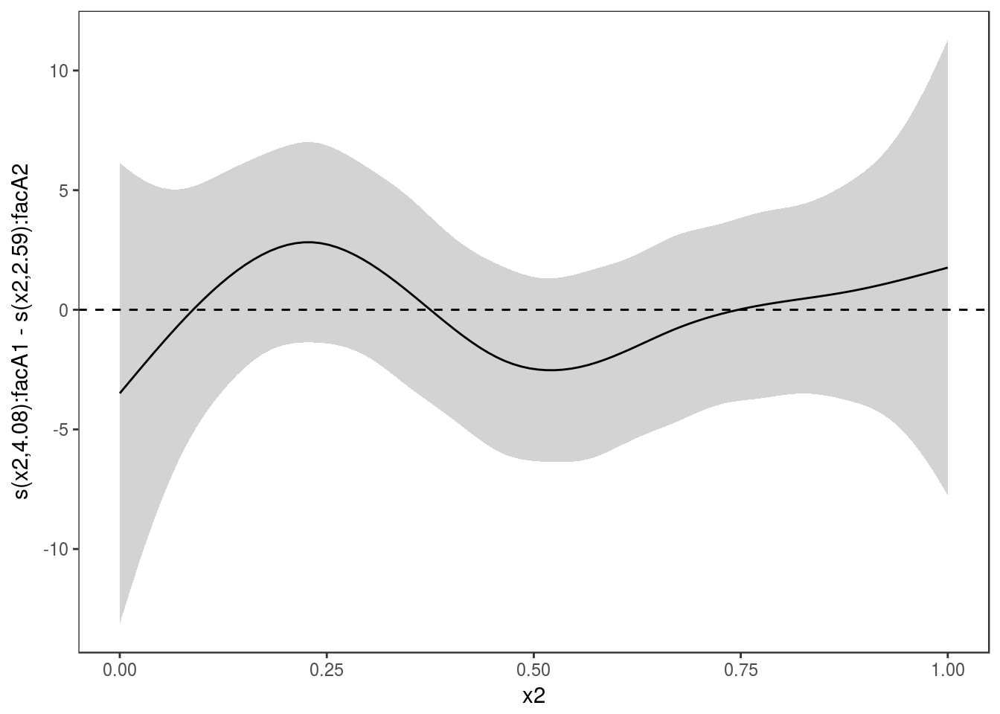
Notice that the credible intervals for the difference smooth produced by plotDiff take into account the cross-covariance between the two smooths.
3.2 Plotting multiple slices of multi-dimensional smooth effects
When dealing with smooth effects defined on more than two dimensions, it is often useful to visualize them as a sequence of 2D slices. The plotSlice function provides such functionality, by exploiting the faceting tools offerered by ggplot2. For instance, here we are slicing a 4D smooth effect along two variables:
n <- 5e3
x <- rnorm(n); y <- rnorm(n); z <- rnorm(n); z2 <- rnorm(n)
ob <- (x-z)^2 + (y-z)^2 + z2^3 + rnorm(n)
b <- bam(ob ~ s(x, y, z, z2), discrete = TRUE)
v <- getViz(b)
# Plot slices across "z" and "x"
pl <- plotSlice(x = sm(v, 1),
fix = list("z" = seq(-2, 2, length.out = 3), "x" = c(-1, 0, 1)))
pl + l_fitRaster() + l_fitContour() + l_points() + l_rug()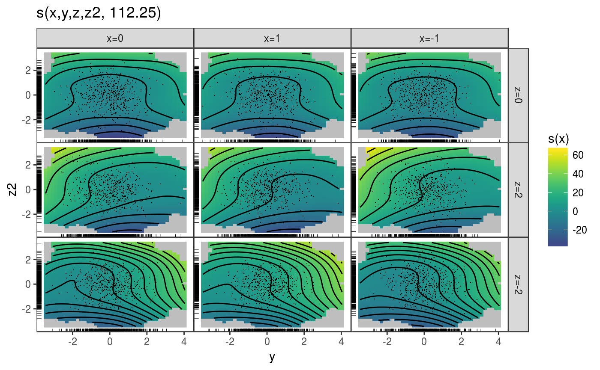
References
Buuren, S. v. and Fredriks, M. (2001) Worm plot: a simple diagnostic device for modelling growth reference curves, Statistics in medicine, 20, 1259–1277.
Murdoch, D. (2001) Rgl: An r interface to opengl, in Proceedings of DSC, p. 2.
Wand, M. P. (1994) Fast computation of multivariate kernel estimators, Journal of Computational and Graphical Statistics, 3, 433–445
Wickham, H. (2009) ggplot2: Elegant Graphics for Data Analysis, Springer-Verlag New York.
Wickham, H. (2010) A layered grammar of graphics, Journal of Computational and Graphical Statistics, 19, 3–28.
Wood, S.N. (2017) Generalized Additive Models: An Introduction with R (2nd edition). Chapman and Hall/CRC.